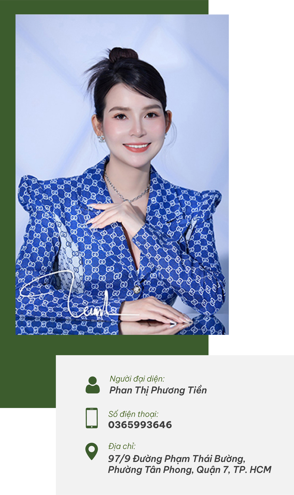

.jpg)
GIỚI THIỆU
Chào quý khách hàng thân yêu của Blue Pink,
Tôi là Phan Thị Phương Tiền, người sáng lập của Công ty TNHH
Blue Pink - nơi chúng tôi mang đến sự hòa quyện giữa vẻ đẹp tự
nhiên và khoa học trong lĩnh vực mỹ phẩm. Tôi đã luôn tin rằng
mọi người đều có quyền tự tin về vẻ đẹp của mình. Và điều này đã
thúc đẩy chúng tôi trong việc nghiên cứu và phát triển các sản
phẩm mỹ phẩm chất lượng hàng đầu, với vẻ đẹp sắc thái từ Hàn
Quốc, để giúp bạn đạt được vẻ đẹp tự nhiên và tỏa sáng mỗi ngày.
Tại Blue Pink, chúng tôi cam kết mang đến cho bạn những trải
nghiệm tuyệt vời nhất. Chúng tôi không chỉ bán sản phẩm mỹ phẩm,
chúng tôi mang đến sự tự tin và niềm vui trong việc chăm sóc da
của bạn. Sự hài lòng của bạn là động lực mạnh mẽ giúp chúng tôi
không ngừng phấn đấu và hoàn thiện. Cùng với đội ngũ chuyên gia
tài năng và tâm huyết, chúng tôi sẽ không ngừng đổi mới và tạo
ra những sản phẩm đáng tin cậy nhất cho bạn. Hãy cùng Blue Pink
trải nghiệm vẻ đẹp và tỏa sáng cùng nhau. Chúng tôi rất hân hạnh
được đồng hành cùng các bạn trong hành trình sắp tới.